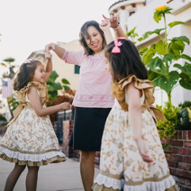
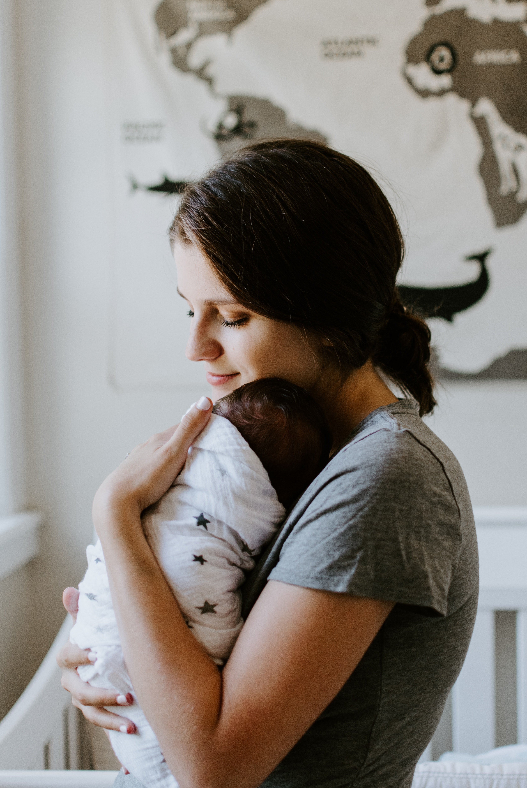

KidsCare
Quality, Affordable Children's Dental Services
1234 Southwest Somewhere Beaverton, Oregon 97008
503-123-4567
Simple webpage, basic colors, some fun photos of healthy kids.

Company Description
KidsCare is a non-profit organization that connects low income families with free or low-cost dental care. They need a website that communicates the services they provide and encourages donors to sponsor individual children and/or families.
Persona #1
Name: Monica Dimple
Biographical Information:
Working single mom with two children in elementary school.
She is receiving OHP services for her young family.
She qualifies for the free lunch program and has subsidized housing to support her family.
OHP provides childcare benefits. Monica works a part-time job during school hours at the local Walmart.
Her family relies on public transportation. She lives Aloha, Oregon.
Traits
- Determined
- Hardworking
- Loving Parent
- Resourceful
Visual Representation

Main Goals
- Taking care of her girl's health is important
- Is worried about expenses and her income
- Is great at and willing to find and use community resources
Frustrations
- Does not have access to technology, uses phone for internet access or library
- Is worried about expenses and her income
Persona #2
Name: Rachel Plum
Biographical Information:
Rachel is a foster mom, her husband Bob works in the banking industry. She is able to stay home with her foster children.
She loves kids, she has a heart to her foster care kids the services they need. She understands knows that some of her kids have not received dental services.
Rachel works with the system to provide free or no cost services. She is looking for a dental practice.
Traits
- Honest and transparent
- Warm
- Loving
- Kind
- Patient
Visual Representation

Main Goals
- Giving her foster kids the best possible chance to succeed
- Believing healthcare is for everyone
- Wanting to find dental services for her foster kids
Frustrations
- The system is hard to navigate, paperwork can be a nightmare
- There are to many requirements and qualifications for services
- There is a long wait time for services
SOLUTIONS - Site Tasks to help with those Goals and Frustrations
- Specific interaction the user would have with the website to further one or more of their goals
- Address and hours of the Dental Offices, Bus directions or maps.
- Costs of services, requirements to qualify for assistance, or waitlist timing.
- Apply for services
- Contact information to Schedule an appointment